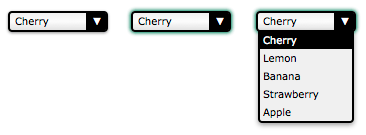

There are some cases where the available native HTML form controls may seem like they are not enough. For example, if you need to perform advanced styling on some controls such as the {{HTMLElement("select")}} element or if you want to provide custom behaviors, you may consider building your own controls.
In this article, we will discuss how to build a custom control. To that end, we will work with an example: rebuilding the {{HTMLElement("select")}} element. We will also discuss how, when, and whether building your own control makes sense, and what to consider when building a control is a requirement.
Note: We'll focus on building the control, not on how to make the code generic and reusable; that would involve some non-trivial JavaScript code and DOM manipulation in an unknown context, and that is out of the scope of this article.
Before building a custom control, you should start by figuring out exactly what you want. This will save you some precious time. In particular, it's important to clearly define all the states of your control. To do this, it's good to start with an existing control whose states and behavior are well known, so that you can mimic those as much as possible.
In our example, we will rebuild the {{HTMLElement("select")}} element. Here is the result we want to achieve:

This screenshot shows the three main states of our control: the normal state (on the left); the active state (in the middle) and the open state (on the right).
In terms of behavior, we are recreating a native HTML element. Therefore it should have the same behaviors and semantics as the native HTML element. We require our control to be usable with a mouse as well as with a keyboard, and comprehensible to a screen reader, just like any native control. Let's start by defining how the control reaches each state:
Once we know how to change states, it is important to define how to change the control's value:
Finally, let's define how the control's options will behave:
For the purposes of our example, we'll stop with that; however, if you're a careful reader, you'll notice that some behaviors are missing. For example, what do you think will happen if the user hits the tab key while the control is in its open state? The answer is... nothing. OK, the right behavior seems obvious but the fact is, because it's not defined in our specs, it is very easy to overlook this behavior. This is especially true in a team environment when the people who design the control's behavior are different from the ones who implement it.
Another fun example: what will happen if the user hits the up or down arrow keys while the control is in the open state? This one is a little bit trickier. If you consider that the active state and the open state are completely different, the answer is again "nothing will happen" because we did not define any keyboard interactions for the opened state. On the other hand, if you consider that the active state and the open state overlap a bit, the value may change but the option will definitely not be highlighted accordingly, once again because we did not define any keyboard interactions over options when the control is in its opened state (we have only defined what should happen when the control is opened, but nothing after that).
We have to think a little further: what about the escape key? Pressing Esc key closes an open select. Remember, if you want to provide the same functionality as the existing native {{htmlelement('select')}}, it should behave the exact same way as the select for all users, from keyboard to mouse to touch to screen reader, and any other input device.
In our example, the missing specifications are obvious so we will handle them, but it can be a real problem for exotic new controls. When it comes to standardized elements, of which the {{htmlelement('select')}} is one, the specification authors spent an inordinate amount of time specifying all interactions for every use case for every input device. Creating new controls is not that easy, especially if you are creating something that has not been done before, and therefore which nobody has the slightest idea of what the expected behaviors and interactions are. At least select has been done before, so we know how it should behave!
Designing new interactions is generally only an option for very large industry players who have enough reach that an interaction they create can become a standard. For example, Apple introduced the scroll wheel with the iPod in 2001. They had the market share to successfully introduce a completely new way of interacting with a device, something most device companies can't do.
It is best not to invent new user interactions. For any interaction you do add, it is vital to spend time in the design stage; if you define a behavior poorly, or forget to define one, it will be very hard to redefine it once the users have gotten used to it. If you have doubts, ask for the opinions of others, and if you have the budget for it, do not hesitate to perform user tests. This process is called UX Design. If you want to learn more about this topic, you should check out the following helpful resources:
Note: Also, in most systems there is a way to open the {{HTMLElement("select")}} element with the keyboard to look at all the available choices (this is the same as clicking the {{HTMLElement("select")}} element with a mouse). This is achieved with Alt + Down on Windows. We didn't implement this in our example, but it would be easy to do so, as the mechanism has already been implemented for the click event.
Now that the control's basic functionality has been decided upon, it's time to start building it. The first step is to define its HTML structure and to give it some basic semantics. Here is what we need to rebuild a {{HTMLElement("select")}} element:
<!-- This is our main container for our control.
The tabindex attribute is what allows the user to focus the control.
We'll see later that it's better to set it through JavaScript. -->
<div class="select" tabindex="0">
<!-- This container will be used to display the current value of the control -->
<span class="value">Cherry</span>
<!-- This container will contain all the options available for our control.
Because it's a list, it makes sense to use the ul element. -->
<ul class="optList">
<!-- Each option only contains the value to be displayed, we'll see later
how to handle the real value that will be sent with the form data -->
<li class="option">Cherry</li>
<li class="option">Lemon</li>
<li class="option">Banana</li>
<li class="option">Strawberry</li>
<li class="option">Apple</li>
</ul>
</div>
Note the use of class names; these identify each relevant part regardless of the actual underlying HTML elements used. This is important to make sure that we don't bind our CSS and JavaScript to a strong HTML structure, so that we can make implementation changes later without breaking code that uses the control. For example, what if you wish to implement the equivalent of the {{HTMLElement("optgroup")}} element later on?
Class names, however, provide no semantic value. In this current state, the screen reader user only "sees" an unordered list. We will add ARIA semantics in a bit.
Now that we have a structure, we can start designing our control. The whole point of building this custom control is to be able to style it exactly how we want. To that end, we will split our CSS work into two parts: the first part will be the CSS rules absolutely necessary to make our control behave like a {{HTMLElement("select")}} element, and the second part will consist of the fancy styles used to make it look the way we want.
The required styles are those necessary to handle the three states of our control.
.select {
/* This will create a positioning context for the list of options;
adding this to .select{{cssxref(':focus-within')}} will be a better option when fully supported
*/
position: relative;
/* This will make our control become part of the text flow and sizable at the same time */
display : inline-block;
}
We need an extra class active to define the look and feel of our control when it is in its active state. Because our control is focusable, we double this custom style with the {{cssxref(":focus")}} pseudo-class in order to be sure they will behave the same.
.select .active,
.select:focus {
outline: none;
/* This {{cssxref('box-shadow')}} property is not exactly required, however it's imperative to ensure
active state is visible, especially to keyboard users, that we use it as a default value. */
box-shadow: 0 0 3px 1px #227755;
}
Now, let's handle the list of options:
/* The .select selector here helps to make we only select
element inside our control. */
.select .optList {
/* This will make sure our list of options will be displayed below the value
and out of the HTML flow */
position : absolute;
top : 100%;
left : 0;
}
We need an extra class to handle when the list of options is hidden. This is necessary in order to manage the differences between the active state and the open state that do not exactly match.
.select .optList.hidden {
/* This is a simple way to hide the list in an accessible way;
we will talk more about accessibility in the end */
max-height: 0;
visibility: hidden;
}
Note: We could also have used transform: scale(1, 0) to give the optionlist no height and full width.
So now that we have the basic functionality in place, the fun can start. The following is just an example of what is possible, and will match the screenshot at the beginning of this article. However, you should feel free to experiment and see what you can come up with.
.select {
/* The computations are made assuming 1em == 16px which is the default value in most browsers.
If you are lost with px to em conversion, try http://riddle.pl/emcalc/ */
font-size : 0.625em; /* this (10px) is the new font size context for em value in this context */
font-family : Verdana, Arial, sans-serif;
box-sizing : border-box;
/* We need extra room for the down arrow we will add */
padding : .1em 2.5em .2em .5em;
width : 10em; /* 100px */
border : .2em solid #000;
border-radius : .4em;
box-shadow : 0 .1em .2em rgba(0,0,0,.45);
/* The first declaration is for browsers that do not support linear gradients. */
background : #F0F0F0;
background : linear-gradient(0deg, #E3E3E3, #fcfcfc 50%, #f0f0f0);
}
.select .value {
/* Because the value can be wider than our control, we have to make sure it will not
change the control's width. If the content overflows, we display an ellipsis */
display : inline-block;
width : 100%;
overflow : hidden;
white-space : nowrap;
text-overflow: ellipsis;
vertical-align: top;
}
We don't need an extra element to design the down arrow; instead, we're using the {{cssxref(":after")}} pseudo-element. It could also be implemented using a simple background image on the select class.
.select:after {
content : "▼"; /* We use the unicode character U+25BC; make sure to set a charset meta tag */
position: absolute;
z-index : 1; /* This will be important to keep the arrow from overlapping the list of options */
top : 0;
right : 0;
box-sizing : border-box;
height : 100%;
width : 2em;
padding-top : .1em;
border-left : .2em solid #000;
border-radius: 0 .1em .1em 0;
background-color : #000;
color : #FFF;
text-align : center;
}
Next, let's style the list of options:
.select .optList {
z-index : 2; /* We explicitly said the list of options will always be on top of the down arrow */
/* this will reset the default style of the ul element */
list-style: none;
margin : 0;
padding: 0;
box-sizing : border-box;
/* If the values are smaller than the control, the list of options
will be as wide as the control itself */
min-width : 100%;
/* In case the list is too long, its content will overflow vertically
(which will add a vertical scrollbar automatically) but never horizontally
(because we haven't set a width, the list will adjust its width automatically.
If it can't, the content will be truncated) */
max-height: 10em; /* 100px */
overflow-y: auto;
overflow-x: hidden;
border: .2em solid #000;
border-top-width : .1em;
border-radius: 0 0 .4em .4em;
box-shadow: 0 .2em .4em rgba(0,0,0,.4);
background: #f0f0f0;
}
For the options, we need to add a highlight class to be able to identify the value the user will pick (or has picked).
.select .option {
padding: .2em .3em; /* 2px 3px */
}
.select .highlight {
background: #000;
color: #FFFFFF;
}
So here's the result with our three states:
| Basic state | Active state | Open state |
|---|---|---|
| {{EmbedLiveSample("Basic_state",120,130, "", "Learn/Forms/How_to_build_custom_form_controls/Example_1")}} | {{EmbedLiveSample("Active_state",120,130, "", "Learn/Forms/How_to_build_custom_form_controls/Example_1")}} | {{EmbedLiveSample("Open_state",120,130, "", "Learn/Forms/How_to_build_custom_form_controls/Example_1")}} |
| Check out the source code | ||
Now that our design and structure are ready, we can write the JavaScript code to make the control actually work.
Warning: The following is educational code, not production code, and should not be used as-is. It is neither future-proof nor will not work on legacy browsers. It also has redundant parts that should be optimized in production code.
Before starting, it's important to remember JavaScript in the browser is an unreliable technology. Custom controls rely on JavaScript to tie everything together. However, there are cases in which JavaScript isn't able to run in the browser:
Because of these risks, it's really important to seriously consider what will happen if your JavaScript doesn't work. We'll discuss options to consider and cover the basics in our example (a full discussion of solving this issue for all scenarios would require a book). Just remember, it is vital make your script generic and reusable.
In our example, if our JavaScript code isn't running, we'll fall back to displaying a standard {{HTMLElement("select")}} element. We include our control and the {{HTMLElement("select")}}; which one is displayed depends on the class of the body element, with the class of the body element being updated by the script that makes the control function, when it loads successfully
To achieve this, we need two things:
First, we need to add a regular {{HTMLElement("select")}} element before each instance of our custom control. There is a benefit to having this "extra" select even if our JavaScript works as hoped: we will use this select to send data from our custom control along with the rest of our form data. We will discuss this in greater depth later.
<body class="no-widget">
<form>
<select name="myFruit">
<option>Cherry</option>
<option>Lemon</option>
<option>Banana</option>
<option>Strawberry</option>
<option>Apple</option>
</select>
<div class="select">
<span class="value">Cherry</span>
<ul class="optList hidden">
<li class="option">Cherry</li>
<li class="option">Lemon</li>
<li class="option">Banana</li>
<li class="option">Strawberry</li>
<li class="option">Apple</li>
</ul>
</div>
</form>
</body>
Second, we need two new classes to let us hide the unneeded element: we visually hide the "real" {{HTMLElement("select")}} element if our script isn't running, or the custom control if it is running. Note that, by default, our HTML code hides our custom control.
.widget select,
.no-widget .select {
/* This CSS selector basically says:
- either we have set the body class to "widget" and thus we hide the actual {{HTMLElement("select")}} element
- or we have not changed the body class, therefore the body class is still "no-widget",
so the elements whose class is "select" must be hidden */
position : absolute;
left : -5000em;
height : 0;
overflow : hidden;
}
This CSS visually hides one of the elements, but it is still available to screen readers.
Now we need a JavaScript switch to determine if the script is running or not. This switch is a couple of lines: if at page load time our script is running, it will remove the no-widget class and add the widget class, thereby swapping the visibility of the {{HTMLElement("select")}} element and the custom control.
window.addEventListener("load", function () {
document.body.classList.remove("no-widget");
document.body.classList.add("widget");
});
| Without JS | With JS |
|---|---|
| {{EmbedLiveSample("No_JS",120,130, "", "Learn/Forms/How_to_build_custom_form_controls/Example_2")}} | {{EmbedLiveSample("JS",120,130, "", "Learn/Forms/How_to_build_custom_form_controls/Example_2")}} |
| Check out the source code | |
Note: If you really want to make your code generic and reusable, instead of doing a class switch it's far better to just add the widget class to hide the {{HTMLElement("select")}} elements, and to dynamically add the DOM tree representing the custom control after every {{HTMLElement("select")}} element in the page.
In the code we are about to build, we will use the standard JavaScript and DOM APIs to do all the work we need. The features we plan to use are the following:
forEachBeyond the availability of those specific features, there is still one issue remaining before starting. The object returned by the {{domxref("element.querySelectorAll","querySelectorAll()")}} function is a {{domxref("NodeList")}} rather than an Array. This is important because Array objects support the forEach function, but {{domxref("NodeList")}} doesn't. Because {{domxref("NodeList")}} really looks like an Array and because forEach is so convenient to use, we can easily add the support of forEach to {{domxref("NodeList")}} in order to make our life easier, like so:
NodeList.prototype.forEach = function (callback) {
Array.prototype.forEach.call(this, callback);
}
If you need to support legacy browsers, ensure the browsers support these features. If not, you can iterate through the list or you may need to use a library or polyfill.
The groundwork is done. We can now start to define all the functions that will be used each time the user interacts with our control.
// This function will be used each time we want to deactivate a custom control
// It takes one parameter
// select : the DOM node with the `select` class to deactivate
function deactivateSelect(select) {
// If the control is not active there is nothing to do
if (!select.classList.contains('active')) return;
// We need to get the list of options for the custom control
var optList = select.querySelector('.optList');
// We close the list of option
optList.classList.add('hidden');
// and we deactivate the custom control itself
select.classList.remove('active');
}
// This function will be used each time the user wants to (de)activate the control
// It takes two parameters:
// select : the DOM node with the `select` class to activate
// selectList : the list of all the DOM nodes with the `select` class
function activeSelect(select, selectList) {
// If the control is already active there is nothing to do
if (select.classList.contains('active')) return;
// We have to turn off the active state on all custom controls
// Because the deactivateSelect function fulfills all the requirements of the
// forEach callback function, we use it directly without using an intermediate
// anonymous function.
selectList.forEach(deactivateSelect);
// And we turn on the active state for this specific control
select.classList.add('active');
}
// This function will be used each time the user wants to open/closed the list of options
// It takes one parameter:
// select : the DOM node with the list to toggle
function toggleOptList(select) {
// The list is kept from the control
var optList = select.querySelector('.optList');
// We change the class of the list to show/hide it
optList.classList.toggle('hidden');
}
// This function will be used each time we need to highlight an option
// It takes two parameters:
// select : the DOM node with the `select` class containing the option to highlight
// option : the DOM node with the `option` class to highlight
function highlightOption(select, option) {
// We get the list of all option available for our custom select element
var optionList = select.querySelectorAll('.option');
// We remove the highlight from all options
optionList.forEach(function (other) {
other.classList.remove('highlight');
});
// We highlight the right option
option.classList.add('highlight');
};
You need these in order to handle the various states of the custom control.
Next, we bind these functions to the appropriate events:
// We handle the event binding when the document is loaded.
window.addEventListener('load', function () {
var selectList = document.querySelectorAll('.select');
// Each custom control needs to be initialized
selectList.forEach(function (select) {
// as well as all its `option` elements
var optionList = select.querySelectorAll('.option');
// Each time a user hovers their mouse over an option, we highlight the given option
optionList.forEach(function (option) {
option.addEventListener('mouseover', function () {
// Note: the `select` and `option` variable are closures
// available in the scope of our function call.
highlightOption(select, option);
});
});
// Each times the user clicks on or taps a custom select element
select.addEventListener('click', function (event) {
// Note: the `select` variable is a closure
// available in the scope of our function call.
// We toggle the visibility of the list of options
toggleOptList(select);
});
// In case the control gains focus
// The control gains the focus each time the user clicks on it or each time
// they use the tabulation key to access the control
select.addEventListener('focus', function (event) {
// Note: the `select` and `selectList` variable are closures
// available in the scope of our function call.
// We activate the control
activeSelect(select, selectList);
});
// In case the control loses focus
select.addEventListener('blur', function (event) {
// Note: the `select` variable is a closure
// available in the scope of our function call.
// We deactivate the control
deactivateSelect(select);
});
// Loose focus if the user hits `esc`
select.addEventListener('keyup', function (event) {
// deactivate on keyup of `esc`
if (event.keyCode === 27) {
deactivateSelect(select);
}
});
});
});
At that point, our control will change state according to our design, but its value doesn't get updated yet. We'll handle that next.
| Live example |
|---|
| {{EmbedLiveSample("Change_states",120,130, "", "Learn/Forms/How_to_build_custom_form_controls/Example_3")}} |
| Check out the source code |
Now that our control is working, we have to add code to update its value according to user input and make it possible to send the value along with form data.
The easiest way to do this is to use a native control under the hood. Such a control will keep track of the value with all the built-in controls provided by the browser, and the value will be sent as usual when a form is submitted. There's no point in reinventing the wheel when we can have all this done for us.
As seen previously, we already use a native select control as a fallback for accessibility reasons; we can synchronize its value with that of our custom control:
// This function updates the displayed value and synchronizes it with the native control.
// It takes two parameters:
// select : the DOM node with the class `select` containing the value to update
// index : the index of the value to be selected
function updateValue(select, index) {
// We need to get the native control for the given custom control
// In our example, that native control is a sibling of the custom control
var nativeWidget = select.previousElementSibling;
// We also need to get the value placeholder of our custom control
var value = select.querySelector('.value');
// And we need the whole list of options
var optionList = select.querySelectorAll('.option');
// We set the selected index to the index of our choice
nativeWidget.selectedIndex = index;
// We update the value placeholder accordingly
value.innerHTML = optionList[index].innerHTML;
// And we highlight the corresponding option of our custom control
highlightOption(select, optionList[index]);
};
// This function returns the current selected index in the native control
// It takes one parameter:
// select : the DOM node with the class `select` related to the native control
function getIndex(select) {
// We need to access the native control for the given custom control
// In our example, that native control is a sibling of the custom control
var nativeWidget = select.previousElementSibling;
return nativeWidget.selectedIndex;
};
With these two functions, we can bind the native controls to the custom ones:
// We handle event binding when the document is loaded.
window.addEventListener('load', function () {
var selectList = document.querySelectorAll('.select');
// Each custom control needs to be initialized
selectList.forEach(function (select) {
var optionList = select.querySelectorAll('.option'),
selectedIndex = getIndex(select);
// We make our custom control focusable
select.tabIndex = 0;
// We make the native control no longer focusable
select.previousElementSibling.tabIndex = -1;
// We make sure that the default selected value is correctly displayed
updateValue(select, selectedIndex);
// Each time a user clicks on an option, we update the value accordingly
optionList.forEach(function (option, index) {
option.addEventListener('click', function (event) {
updateValue(select, index);
});
});
// Each time a user uses their keyboard on a focused control, we update the value accordingly
select.addEventListener('keyup', function (event) {
var length = optionList.length,
index = getIndex(select);
// When the user hits the down arrow, we jump to the next option
if (event.keyCode === 40 && index < length - 1) { index++; }
// When the user hits the up arrow, we jump to the previous option
if (event.keyCode === 38 && index > 0) { index--; }
updateValue(select, index);
});
});
});
In the code above, it's worth noting the use of the tabIndex property. Using this property is necessary to ensure that the native control will never gain focus, and to make sure that our custom control gains focus when the user uses their keyboard or mouse.
With that, we're done! Here's the result:
| Live example |
|---|
| {{EmbedLiveSample("Change_states",120,130, "", "Learn/Forms/How_to_build_custom_form_controls/Example_4")}} |
| Check out the source code |
But wait a second, are we really done?
We have built something that works and though we're far from a fully-featured select box, it works nicely. But what we've done is nothing more than fiddle with the DOM. It has no real semantics, and even though it looks like a select box, from the browser's point of view it isn't one, so assistive technologies won't be able to understand it's a select box. In short, this pretty new select box isn't accessible!
Fortunately, there is a solution and it's called ARIA. ARIA stands for "Accessible Rich Internet Application", and it's a W3C specification specifically designed for what we are doing here: making web applications and custom controls accessible. It's basically a set of attributes that extend HTML so that we can better describe roles, states and properties as though the element we've just devised was the native element it tries to pass for. Using these attributes can be done by editing the HTML markup. We also update the ARIA attributes via JavaScript as the user updates their selected value.
role attributeThe key attribute used by ARIA is the role attribute. The role attribute accepts a value that defines what an element is used for. Each role defines its own requirements and behaviors. In our example, we will use the listbox role. It's a "composite role", which means elements with that role expect to have children, each with a specific role (in this case, at least one child with the option role).
It's also worth noting that ARIA defines roles that are applied by default to standard HTML markup. For example, the {{HTMLElement("table")}} element matches the role grid, and the {{HTMLElement("ul")}} element matches the role list. Because we use a {{HTMLElement("ul")}} element, we want to make sure the listbox role of our control will supersede the list role of the {{HTMLElement("ul")}} element. To that end, we will use the role presentation. This role is designed to let us indicate that an element has no special meaning, and is used solely to present information. We will apply it to our {{HTMLElement("ul")}} element.
To support the listbox role, we just have to update our HTML like this:
<!-- We add the role="listbox" attribute to our top element -->
<div class="select" role="listbox">
<span class="value">Cherry</span>
<!-- We also add the role="presentation" to the ul element -->
<ul class="optList" role="presentation">
<!-- And we add the role="option" attribute to all the li elements -->
<li role="option" class="option">Cherry</li>
<li role="option" class="option">Lemon</li>
<li role="option" class="option">Banana</li>
<li role="option" class="option">Strawberry</li>
<li role="option" class="option">Apple</li>
</ul>
</div>
Note: Including both the role attribute and a class attribute is not necessary. Instead of using .option use the [role="option] attribute selectors in your CSS .
aria-selected attributeUsing the role attribute is not enough. ARIA also provides many states and property attributes. The more and better you use them, the better your control will be understood by assistive technologies. In our case, we will limit our usage to one attribute: aria-selected.
The aria-selected attribute is used to mark which option is currently selected; this lets assistive technologies inform the user what the current selection is. We will use it dynamically with JavaScript to mark the selected option each time the user chooses one. To that end, we need to revise our updateValue() function:
function updateValue(select, index) {
var nativeWidget = select.previousElementSibling;
var value = select.querySelector('.value');
var optionList = select.querySelectorAll('[role="option"]');
// We make sure that all the options are not selected
optionList.forEach(function (other) {
other.setAttribute('aria-selected', 'false');
});
// We make sure the chosen option is selected
optionList[index].setAttribute('aria-selected', 'true');
nativeWidget.selectedIndex = index;
value.innerHTML = optionList[index].innerHTML;
highlightOption(select, optionList[index]);
};
It might have seemed simpler to let a screen reader focus on the off-screen select and ignore our stylized one, but this is not an accessible solution. Screen readers are not limited to blind people; people with low vision and even perfect vision use them as well. For this reason, you can not have the screen reader focus on an off-screen element.
Here is the final result of all these changes (you'll get a better feel for this by trying it with an assistive technology such as NVDA or VoiceOver):
| Live example |
|---|
| {{EmbedLiveSample("Change_states",120,130, "", "Learn/Forms/How_to_build_custom_form_controls/Example_5")}} |
| Check out the final source code |
If you want to move forward, the code in this example needs some improvement before it becomes generic and reusable. This is an exercise you can try to perform. Two hints to help you in this: the first argument for all our functions is the same, which means those functions need the same context. Building an object to share that context would be wise.
In the above example, we reinvented a {{htmlelement('select')}} element using non-semantic HTML, CSS, and JavaScript. This select was selecting one option from a limited number of options, which is the same functionality of a same-named group of {{htmlelement('input/radio', 'radio')}} buttons.
We could therefore reinvent this using radio buttons instead; let's look at this option.
We can start with a completely semantic, accessible, unordered list of {{htmlelement('input/radio','radio')}} buttons with an associated {{htmlelement('label')}}, labeling the entire group with a semantically appropriate {{htmlelement('fieldset')}} and {{htmlelement('legend')}} pair.
<fieldset> <legend>Pick a fruit</legend> <ul class="styledSelect"> <li><input type="radio" name="fruit" value="Cherry" id="fruitCherry" checked><label for="fruitCherry">Cherry</label></li> <li><input type="radio" name="fruit" value="Lemon" id="fruitLemon"><label for="fruitLemon">Lemon</label></li> <li><input type="radio" name="fruit" value="Banana" id="fruitBanana"><label for="fruitBanana"">Banana</label></li> <li><input type="radio" name="fruit" value="Strawberry" id="fruitStrawberry"><label for="fruitStrawberry">Strawberry</label></li> <li><input type="radio" name="fruit" value="Apple" id="fruitApple"><label for="fruitApple">Apple</label></li> </ul> </fieldset>
We'll do a little styling of the radio button list (not the legend/fieldset) to make it look somewhat like the earlier example, just to show that it can be done:
.styledSelect {
display: inline-block;
padding: 0;
}
.styledSelect li {
list-style-type: none;
padding: 0;
display: flex;
}
.styledSelect [type=radio] {
position: absolute;
left: -100vw;
top: -100vh;
}
.styledSelect label {
margin: 0;
line-height: 2;
padding: 0 0 0 4px;
}
.styledSelect:not(:focus-within) input:not(:checked) + label {
height: 0;
outline: none;
overflow: hidden;
}
.styledSelect:not(:focus-within) input:checked + label {
border: .2em solid #000;
border-radius: .4em;
box-shadow: 0 .1em .2em rgba(0,0,0,.45);
}
.styledSelect:not(:focus-within) input:checked + label::after {
content : "▼";
background: black;
float: right;
color: white;
padding: 0 4px;
margin: 0 -4px 0 4px;
}
.styledSelect:focus-within {
border: .2em solid #000;
border-radius: .4em;
box-shadow: 0 .1em .2em rgba(0,0,0,.45);
}
.styledSelect:focus-within input:checked + label {
background-color: #333;
color: #fff;
width: 100%;
}
With no JavaScript, and just a little bit of CSS, we are able to style the list of radio buttons to display only the checked item. When the focus is within the <ul> in the <fieldset>, the list opens up, and the up and down (and left and right) arrows work to select the previous and next items. Try it out:
{{EmbedLiveSample("An_alternative_approach_Using_radio_buttons",200,240)}}
This works, to some extent, without JavaScript. We've created a similar control to our custom control, that works even if the JavaScript fails. Looks like a great solution, right? Well, not 100%. It does work with the keyboard, but not as expected with a mouse click. It likely makes more sense to use web standards as the basis for custom controls instead of relying on frameworks to create elements with no native semantics. However, our control doesn't have the same functionality that a <select> has natively.
On the plus side, this control is fully accessible to a screen reader and fully navigable via the keyboard. However, this control isn't a {{htmlelement('select')}} replacement. There is functionality that differs and/or is missing. For example, all four arrows navigate through the options, but clicking the down arrow when the user is on the last button takes them to the first button; it doesn't stop at the top and bottom of the option list like a <select> does.
We'll leave adding this missing functionality as a reader exercise.
We have seen all the basics of building a custom form control, but as you can see it's not trivial to do. Before creating your own customized control, consider whether HTML provides alternative elements that can be used to adequately support your requirements. If you do need to create a custom control, it is often easier to rely on third-party libraries instead of building your own. But, if you do create your own, modify existing elements, or use a framework to implement a pre-baked control, remember that creating a usable and accessible form control is more complicated than it looks.
Here are a few libraries you should consider before coding your own:
If you do create alternative controls via radio buttons, your own JavaScript, or with a 3rd party library, ensure it is accessible and feature-proof; that is, it needs to be able to work better with a variety of browsers whose compatibility with the Web standards they use vary. Have fun!